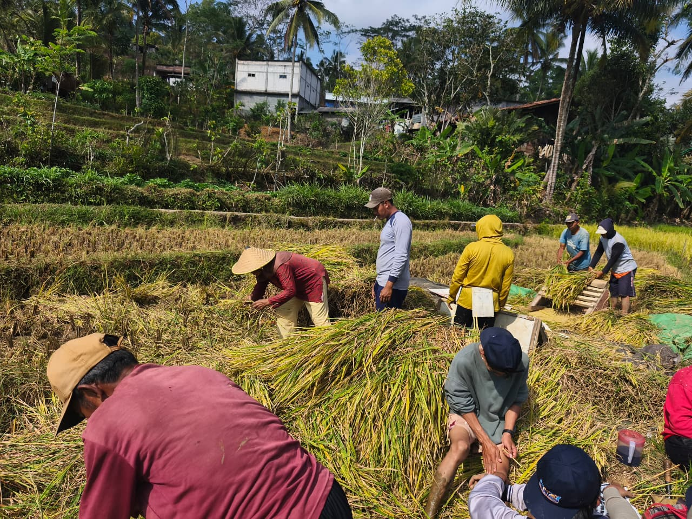
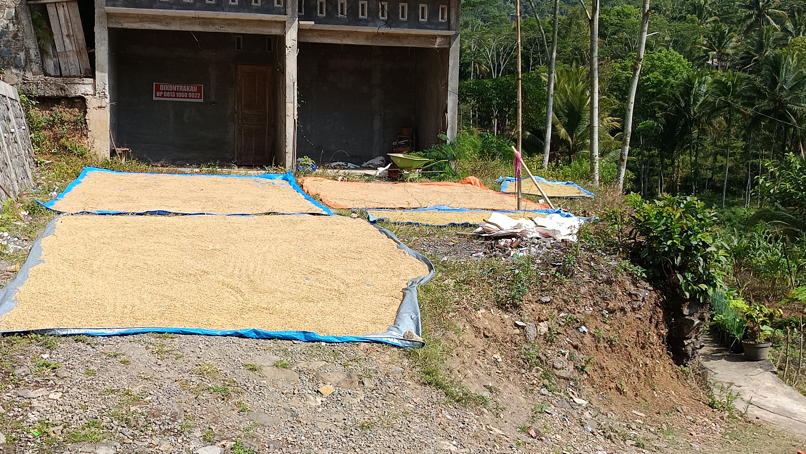
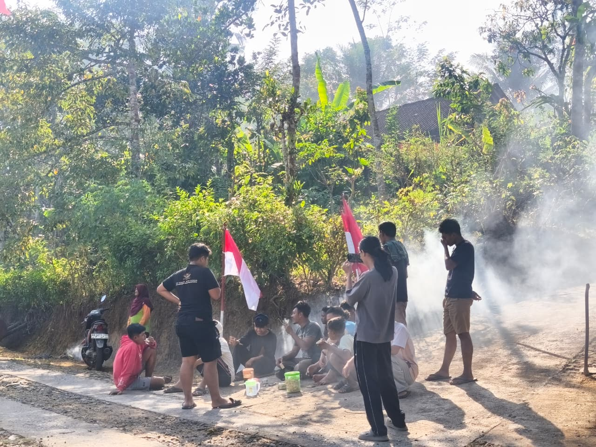
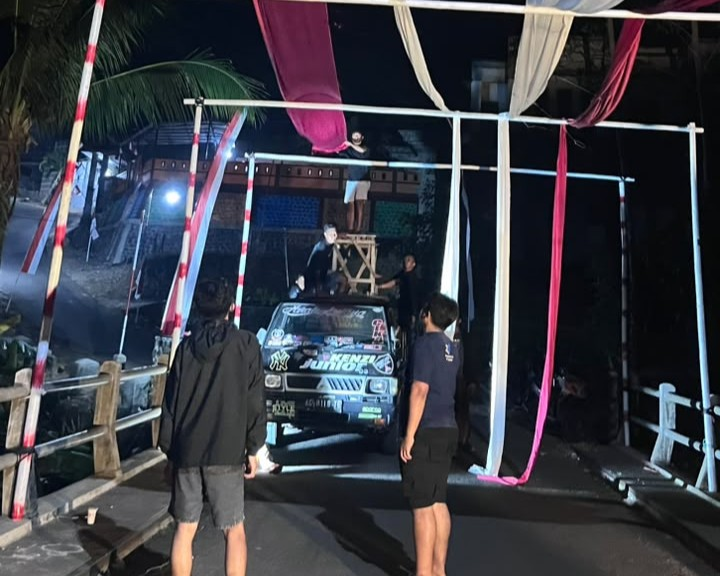
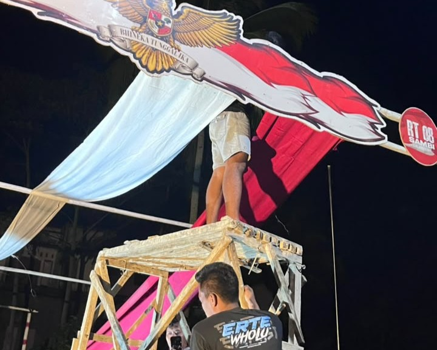
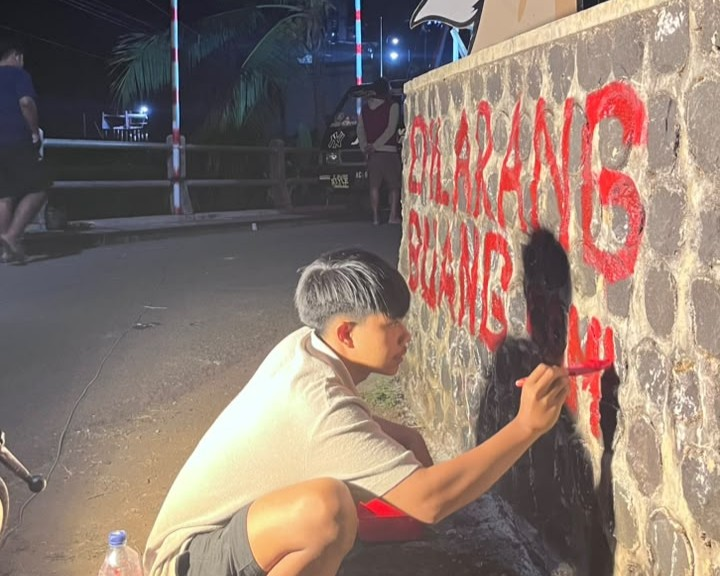

Pusat Pertanian dan Gotong Royong Warga.
Pusat Episentrum Desa: Dusun ini bertindak sebagai jantung kegiatan desa, menjadi tuan rumah untuk berbagai acara komunal seperti tradisi Baritan, perlombaan Peringatan Hari Besar Nasional (PHBN), hingga acara pameran/expo kemasyarakatan.
Karakteristik Masyarakat: Memiliki ikatan sosial yang sangat erat dengan budaya gotong royong yang masih dipegang teguh. Hal ini menjadi modal sosial utama yang memudahkan koordinasi dalam setiap pembangunan atau pelaksanaan acara dusun.
Dusun Krajan adalah jantung pergerakan sosial dan budaya desa yang memadukan kekayaan agraris, kemandirian ekonomi kreatif, serta pelestarian tradisi masyarakat. Dihuni oleh warga yang memegang teguh semangat gotong royong, dusun ini selalu dipercaya menjadi pusat dari berbagai perayaan penting desa, mulai dari ritual adat Baritan, semarak perlombaan PHBN, hingga pameran expo yang menggeliatkan roda perekonomian lokal. Secara ekonomi, Dusun Krajan ditopang oleh sektor pertanian yang kuat melalui komoditas padi esensial dan budidaya porang yang memiliki nilai komersial tinggi. Di samping itu, denyut produktivitas warga juga hadir melalui para perajin besek tradisional yang terus memproduksi karya ramah lingkungan. Perpaduan antara etos kerja masyarakat agraris, kreativitas UMKM, dan kentalnya modal sosial komunal menjadikan Dusun Krajan sebagai wilayah yang mandiri, guyub, dan memiliki potensi besar untuk terus berkembang maju.
Dokumentasi observasi di Dusun Krajan.





